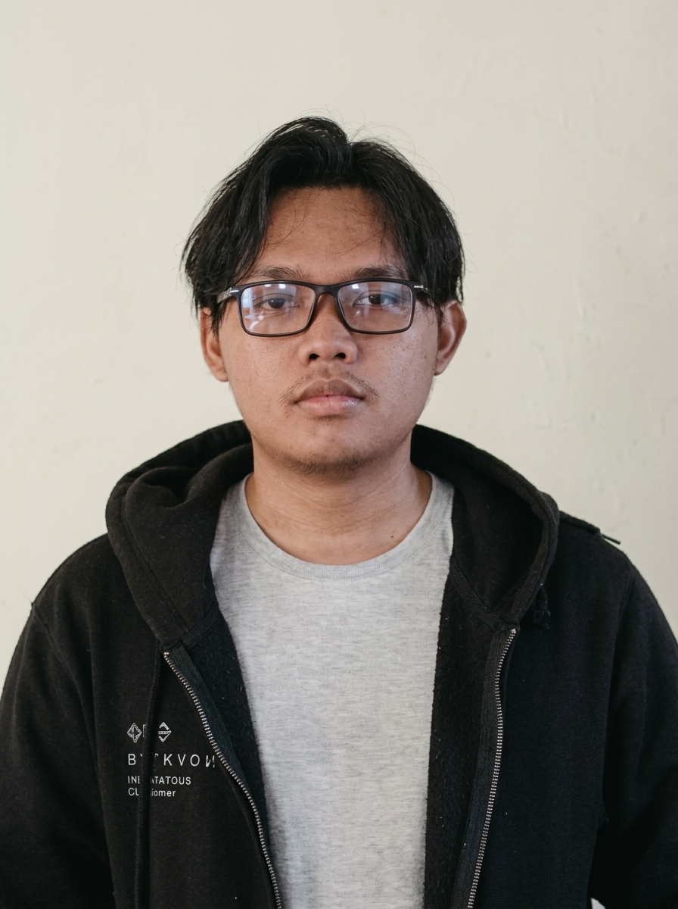

Ilmam Hashfi Firjatullah
A Computer Engineering Graduate with a current focus of Web Development and Transferable Programming Fundamental. I have multiple exposure to technologies from college and projects which is Web Development, IoT, LLM/AI/ML models implementation (Local and API), Databases (SQL, NoSQL, and S3 Object Storage), Cloud Services (Supabase, Firebase, AWS, Vercel, etc) to integrating multiple application (Web-Cloud-AI-Mobile). I also try to do some codewars, leetcode, or experimenting something new in my free time. Accountability and deliverability are my core values in developing products.

Selected Works & Practical Builds
Hands-on web applications, developer utilities, and internal tools bridging frontend, backend, and operations.

Your Landing Page + CMS
A portfolio/business landing-page builder: made using Laravel 12 API that serves a section-based public website (the backend), plus a React 19 admin CMS to manage all of it (the frontend). No coding needed to change what's on the page. This project teached me how to properly develop a proper fullstack web application from making PRD, making API Contract, and structured development phases. Learnt js/ts callback function, data fetching, component-data handling, type-safe codebase and proper MVC Backend structure with Laravel API implementing Model, Controller, Validation, Resource, DB Migration, Factory, and Seeder.
- ―Built frontend using React Vite, Tailwind, Axios, React Router
- ―Developed structured backend with MVC pattern using Laravel API
- ―End to end development from whiteboarding requirement, database design, UI/UX reference all in Miro before starting
Conversatype
A web-based typing game for training typing words and simulating English conversation. Made using Vite React Tailwind and Antigravity. This project is a result of experimenting doing Web Development from zero to deployment using AI Driven Development. Experimented with publishing website and SEO, used Vercel for Deployment, Cloudflare for Domain, Google Search Console for making site indexed from google search, and Posthog for site analytics.
- ―Clean gamified Web made using Vite React Tailwind
- ―Tested AI Driven Development
- ―Full live site deployed and google indexed
Work History & Experience
Practical experience across engineering, QA testing, cross-functional sprints, and operational workflows.
AI Engineer
Developed several Fullstack Web and Automation PoC built around AI/ML/LLM models. Mainly doing research to company poc product ideas and exploring LLM API, N8N Automation, and Computer Vision based projects.
Technical Tooling & Foundations
Languages, frameworks, databases, and tools/workflows I work with.
Programming & Foundations
- JavaScript / TypeScript
- PHP
- Python
- HTML / CSS
- SQL (PostgreSQL / MySQL)
- C++
- Java
Frontend Development
- React
- Tailwind CSS
- Next.js
Backend & Data
- RESTful API Design
- Laravel
- SQL/NoSQL Databases
- CRUD Operations & Data Modeling
- Authentication (JWT)
- API Testing (Postman)
Tools
- Git
- Docker Basics
- Miro
- Excalidraw
- Google Workspace
- SEO
- Figma
Initiate Contact & Collaboration
Interested in discussing a junior engineering role, open-source project, or engineering collaboration? Reach out directly.
Let's build meaningful software and collaborate together.
Currently open for junior/associate software engineering positions, cross-division teamwork, and web development opportunities.
Continuous Learning
Curiosity · Pragmatism · Growth
"In the beginner's mind there are many possibilities. Stay humble, ask questions, and continuously refine the craft."